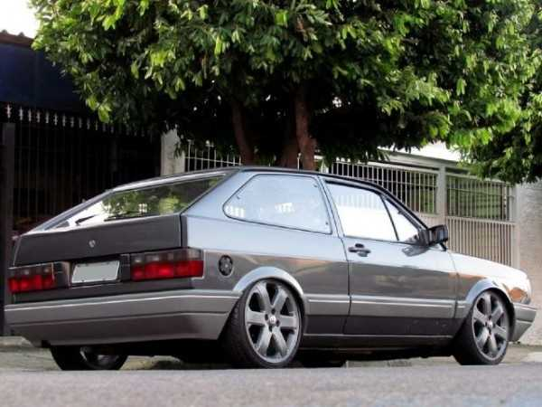
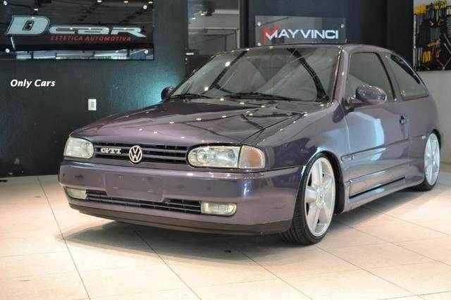

Gol Quadrado
Tudo se iniciou por volta de 1975, com a ideia de se ter um novo modelo compacto, mas o que poucos sabem, é que tanto Golf, Scirocco, e o próprio Gol, tiveram um antecessor em comum, o modelo EA276 de 1972, meio desengonçado e com proporções ainda um tanto exageradas, como todo bom conceito.

Gol Bola
Uma das gerações de maior destaque da gama do Volkswagen é justamente a apelidada como “Gol Bola”, que na verdade é a segunda geração da linha. O modelo surgiu em 1994 e recebeu esse apelido pelo visual arredondado – o Gol G1, ou Gol quadrado, era mais “quadradão”, com formas inspiradas no alemão Scirocco.
